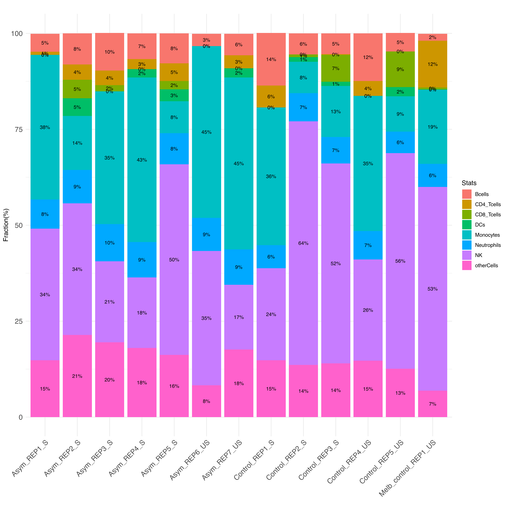

Last updated: 2026-11-01
Checks: 7 0
Knit directory: anthony_pvivax_atacseq/
This reproducible R Markdown analysis was created with workflowr (version 1.7.2). The Checks tab describes the reproducibility checks that were applied when the results were created. The Past versions tab lists the development history.
Great! Since the R Markdown file has been committed to the Git repository, you know the exact version of the code that produced these results.
Great job! The global environment was empty. Objects defined in the global environment can affect the analysis in your R Markdown file in unknown ways. For reproduciblity it’s best to always run the code in an empty environment.
The command set.seed(20261031) was run prior to running
the code in the R Markdown file. Setting a seed ensures that any results
that rely on randomness, e.g. subsampling or permutations, are
reproducible.
Great job! Recording the operating system, R version, and package versions is critical for reproducibility.
Nice! There were no cached chunks for this analysis, so you can be confident that you successfully produced the results during this run.
Great job! Using relative paths to the files within your workflowr project makes it easier to run your code on other machines.
Great! You are using Git for version control. Tracking code development and connecting the code version to the results is critical for reproducibility.
The results in this page were generated with repository version 4deb6a8. See the Past versions tab to see a history of the changes made to the R Markdown and HTML files.
Note that you need to be careful to ensure that all relevant files for
the analysis have been committed to Git prior to generating the results
(you can use wflow_publish or
wflow_git_commit). workflowr only checks the R Markdown
file, but you know if there are other scripts or data files that it
depends on. Below is the status of the Git repository when the results
were generated:
Untracked files:
Untracked: .Rprofile
Untracked: .Rproj.user/
Untracked: README.md
Untracked: _workflowr.yml
Untracked: anthony_pvivax_atacseq.Rproj
Note that any generated files, e.g. HTML, png, CSS, etc., are not included in this status report because it is ok for generated content to have uncommitted changes.
These are the previous versions of the repository in which changes were
made to the R Markdown (analysis/celltypecheck.Rmd) and
HTML (docs/celltypecheck.html) files. If you’ve configured
a remote Git repository (see ?wflow_git_remote), click on
the hyperlinks in the table below to view the files as they were in that
past version.
| File | Version | Author | Date | Message |
|---|---|---|---|---|
| Rmd | 4deb6a8 | chisangad | 2026-11-01 | first commit |
| html | 4deb6a8 | chisangad | 2026-11-01 | first commit |
Cellular heterogeneity in bulk Assay for Transposase-Accessible Chromatin using sequencing (ATAC-seq) data can significantly confound downstream differential accessibility analyses and functional interpretations. Variations in chromatin accessibility profiles across heterogeneous tissue or blood samples may reflect altered cell-type proportions rather than genuine intracellular epigenetic modifications.
To estimate and account for cell composition differences across biological samples, reference-based cell-type deconvolution is performed using EPIC-ATAC (10.7554/eLife.26476?). EPIC-ATAC adapts constrained non-negative least squares (NNLS) regression frameworks originally established for transcriptomic deconvolution (EPIC) to assess cell-type-specific chromatin accessibility signatures.
Rsubread::featureCounts.atacRef_PBMC).Read summarisation quantifies alignment fragments spanning cell-type marker locus boundaries. The reference marker regions provided within the EPIC-ATAC package are defined in Simplified Annotation Format (markerPeaks.saf), delineating open chromatin sites characteristic of distinct immune populations.
Alignment files (.bam) generated via the NF-Core ATAC-seq processing pipeline are evaluated against these marker annotations using Rsubread::featureCounts.
The resulting count matrix contains raw fragment counts across specified cell-type marker peaks and is saved as an intermediate RDS file for reproducible downstream scaling.
The reads were first transformed using the get_TPMlike_counts function within EPIC-ATAC and then used to identify cell types within each sample.
The stacked bar plot below illustrates estimated cell type composition across all processed samples. This visualisation helps assess potential sample composition biases, confirm sample purity, and evaluate cell population shifts upon biological stimulation.

Fraction of cell types in each sample
This report cites computational algorithms, published methodologies, and reference datasets utilised throughout the analysis.
The following section provides a comprehensive overview of all the code chunks used in this analysis. Each code chunk is labeled with its corresponding name, allowing for easy reference and reproducibility of the analysis.
seed-set-by-workflowrset.seed(20261031)
setupoptions(bitmapType='cairo')
knitr::opts_chunk$set(
echo = F,
dpi = 150,
error=FALSE,
warning = F,
dev = c("png","pdf"),
message = F)
setup2source("code/globalfun.R")
read-in-sample-sheetsample.sheet<-readRDS("output/sample_sheet.valid.rds")
sample.sheet$group<-factor(sample.sheet$group.x)
sample.sheet$batch<-factor(sample.sheet$batch)
unnamed-chunk-1saf <- read.table(system.file("extdata", "markerPeaks.saf", package = "EPICATAC"),header = T)
bam_files<-list.files("output/NFCore_ATACseq/bwa/merged_library",pattern="*.bam$", full.names = T)
concensus_peaks<-"output/NFCore_ATACseq/bwa/merged_library/macs2/narrow_peak/consensus/consensus_peaks.mLb.clN.saf"
fc.annot <- featureCounts(
files = bam_files,
annot.ext = saf,
isGTFAnnotation = FALSE,
isPairedEnd = TRUE,
fracOverlap = 0.2,
nthreads = 8
)
saveRDS(fc.annot,file = "output/epic-atac-markers-counts.RDS")
unnamed-chunk-2fc.annot<-readRDS(file = "output/epic-atac-markers-counts.RDS")
counts <- fc.annot$counts
normalized_counts <- EPICATAC:::get_TPMlike_counts(counts)
out <- EPIC_ATAC(bulk = normalized_counts, reference = atacRef_PBMC, ATAC = TRUE)
saveRDS(out, file = "output/epic_atac.RDS")
unnamed-chunk-3epic_atac_output <- readRDS("output/epic_atac.RDS")
cell.fracs <- epic_atac_output$cellFractions %>% as.data.frame() %>%
tibble::rownames_to_column("Sample") %>%
mutate(Sample = paste0(gsub(".mL.*", "", Sample)))
cell.fracs$Sample <- with(sample.sheet,
paste0(cell.fracs$Sample, "_",
sample.sheet$stim.unstim[match(cell.fracs$Sample, sample)]))
cell.fracs <- cell.fracs %>% pivot_longer(cols = -1,
names_to = "Cell.type",
values_to = "Fraction")
cell.fracs$Fraction<-round(cell.fracs$Fraction*100,1)
bar-plot-cell-typesggplot(cell.fracs, aes(
x = Sample, y = Fraction,fill=Cell.type)) +
geom_col() +
labs(title = "",
x = "",
y = "Fraction(%)",
fill= "Stats") +
geom_text(
aes(label = paste0(round(Fraction,0),"%")),
position = position_stack(vjust = 0.5),
size = 3
) +
theme_minimal() +
theme(
axis.text.x = element_text(
angle = 45,
hjust = 1,
vjust = 1,
size = 12
),
axis.text.y = element_text(
size = 12
),
plot.title = element_text(hjust = 0.8)
)
session-info-chunk-inserted-by-workflowrsessionInfo()
R version 4.6.0 (2026-04-24)
Platform: aarch64-apple-darwin23
Running under: macOS Tahoe 26.6.2
Matrix products: default
BLAS: /Library/Frameworks/R.framework/Versions/4.6/Resources/lib/libRblas.0.dylib
LAPACK: /Library/Frameworks/R.framework/Versions/4.6/Resources/lib/libRlapack.dylib; LAPACK version 3.12.1
locale:
[1] en_US.UTF-8/en_US.UTF-8/en_US.UTF-8/C/en_US.UTF-8/en_US.UTF-8
time zone: Australia/Melbourne
tzcode source: internal
attached base packages:
[1] grid stats graphics grDevices utils datasets methods
[8] base
other attached packages:
[1] downloadthis_0.5.0 DT_0.34.0 htmltools_0.5.9
[4] sva_3.60.0 BiocParallel_1.46.0 genefilter_1.94.0
[7] mgcv_1.9-4 nlme_3.1-169 edgeR_4.10.5
[10] limma_3.68.5 formatR_1.14 viridis_0.6.5
[13] viridisLite_0.4.3 patchwork_1.3.2 ggseqlogo_0.2.2
[16] ggvenn_0.1.19 ggplotify_0.1.4 ggpubr_1.0.0
[19] ggrepel_0.9.8 ComplexHeatmap_2.28.0 tidyr_1.3.2
[22] dplyr_1.2.1 ggplot2_4.0.3 knitr_1.52
[25] workflowr_1.7.2
loaded via a namespace (and not attached):
[1] RColorBrewer_1.1-3 rstudioapi_0.19.0 jsonlite_2.0.0
[4] shape_1.4.6.1 magrittr_2.0.5 farver_2.1.2
[7] rmarkdown_2.32 GlobalOptions_0.1.4 fs_2.1.0
[10] vctrs_0.7.3 memoise_2.0.1 rstatix_1.1.0
[13] broom_1.0.13 Formula_1.2-6 gridGraphics_0.5-1
[16] sass_0.4.10 bslib_0.12.0 htmlwidgets_1.6.4
[19] cachem_1.1.0 whisker_0.4.1 mime_0.13
[22] lifecycle_1.0.5 iterators_1.0.14 pkgconfig_2.0.3
[25] Matrix_1.7-6 R6_2.6.1 fastmap_1.2.0
[28] MatrixGenerics_1.24.0 clue_0.3-68 digest_0.6.39
[31] colorspace_2.1-4 AnnotationDbi_1.74.0 S4Vectors_0.50.3
[34] rprojroot_2.1.1 RSQLite_3.53.3 labeling_0.4.3
[37] httr_1.4.9 abind_1.4-8 compiler_4.6.0
[40] bit64_4.8.6 withr_3.0.3 doParallel_1.0.17
[43] S7_0.2.2 backports_1.5.1 carData_3.0-6
[46] DBI_1.3.0 ggsignif_0.6.4 rappdirs_0.3.4
[49] rjson_0.2.23 tools_4.6.0 otel_0.2.0
[52] httpuv_1.6.17 glue_1.8.1 callr_3.8.0
[55] promises_1.5.0 getPass_0.2-4 cluster_2.1.8.3
[58] generics_0.1.4 gtable_0.3.6 car_3.1-5
[61] XVector_0.52.0 BiocGenerics_0.58.1 foreach_1.5.2
[64] pillar_1.11.1 stringr_1.6.0 yulab.utils_0.2.5
[67] later_1.4.8 circlize_0.4.18 splines_4.6.0
[70] lattice_0.23-1 survival_3.8-6 bit_4.6.0
[73] annotate_1.90.0 tidyselect_1.2.1 locfit_1.5-9.12
[76] Biostrings_2.80.2 git2r_0.36.2 gridExtra_2.3.1
[79] IRanges_2.46.0 Seqinfo_1.2.0 stats4_4.6.0
[82] xfun_0.61 Biobase_2.72.0 statmod_1.5.2
[85] matrixStats_1.5.0 stringi_1.8.9 yaml_2.3.12
[88] evaluate_1.0.5 codetools_0.2-20 tibble_3.3.1
[91] cli_3.6.6 xtable_1.8-8 processx_3.9.0
[94] jquerylib_0.1.4 dichromat_2.0-1 Rcpp_1.1.2
[97] png_0.1-9 XML_3.99-0.25 parallel_4.6.0
[100] blob_1.3.0 scales_1.4.0 purrr_1.2.2
[103] crayon_1.5.3 GetoptLong_1.1.1 rlang_1.3.0
[106] KEGGREST_1.52.2